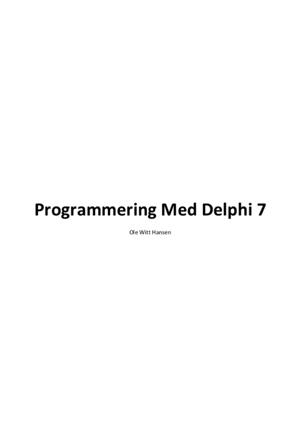

Programmering Med Delphi 7
Writed by : Ole Witt-Hansen
Published date : 2003
Language :  Dansk
Dansk
Web site : http://olewitthansen.dk/Datalogi/ProgrammeringMedDelphi.pdf
Where to buy ?
If this book is still available for sale, you probably can order it on its website.
Table of content
INDHOLD
FORORD KAP 1. DELPHI. OBJECT PASCAL TIL WINDOWS
1. Delphi - et professionelt udviklingsværktøj til Windows
1.1 Grafisk brugergrænseflade
1.2 Objektorienteret programmering
1.3 Færdige visuelle komponenter. Hændelser og metoder
1.4 Hændelsesstyret programmering
KAP 2. DELPHI'S GRAFISKE BRUGERGRÆNSEFLADE
1. IDE’en i Delphi 7
1.1 Diagram View
2. Anvendelse af Delphis editor
2.1 Markering af tekst (blokke). Flytning og kopiering
2.2 Andre vigtige redigeringstaster
2.3 Find og erstat
2.4 Menuerne
2.5 Bogmærker
2.6 Delphi'sfilerogfiltyper
2.7 PopUp-vinduer i editoren. Code Completion
2.8 Class Completion, Code Templates og Code Insight
KAP 3. WINDOWS PROGRAMMERING MED DELPHI
1. Den Blå grotte
1.1 Programudskrift af formens unit
1.2 Formens *.dfm fil
1.3 DenBlaaGrotte_0.dpr filen
2. Farve-animation. Tilføjelse af en Timer-komponent
3. Eksempel på brug af Delphi's grafiske metoder
3.1 Programudskrift
KAP 4. MENUER, GRAFIK OG ANIMATION.
1. Menuer
2. Grafik i Delphi
3. De skøre kugler
3.1 Programudskrift (Findes på bog.ing.dk)
3.2 Animationen
3.3 Anvendelse af PopUp-menuer
4. Andre muligheder for animation
4.1 Animation med xor
4.2 Programudskrift (Bog.ing.dk)
4.3 Kommentar til KuglerXor
5. Anvendelse af Shape komponenten
5.1 Animation med Shapes
5.2 Grænsefladen for KuglerShapeArray5.3 Programudskrift af KuglerShapeArrayUnit (Bog.ing.dk)
6. Det er svært at sige nej
6.1 Udskrift af Drillepind
KAP 5. ET TEGNEPROGRAM I DELPHI
1. En klon af Mspaint
2. SpeedButtons
3. Udskrift af DrawingProgramUnit (Bog.ing.dk)
4. Dissektion af Drawingprogram
4.1 DrawingImageMouseDown
4.2 DrawingImageMouseMove
4.3 DrawingImageMouseUp
4.4 Dissektion af DrawingImageMouseUp
4.5 Copy, Cut og Paste. Brugen af ClipBoard.
4.6 BrugenafClipBoardtilandreformål
4.7 OverførelseafetBitmaptilprinteren
4.8 Brug af en PopUpMenu til CopyCutPaste operationerne
KAP 6. AVANCERET GRAFIK OG ANIMATION
1. Animation med Bitmaps
2. Animation med SpeedButtons
3. Animation med Bitmaps. Sprites
3.1 Fremstilling af en sprite
3.2 Programmering med Bitmaps
3.3 Sprite-programmet. Programudskrift
3.4 Kommentar til Sprite-programmet
3.5 Brug af ressourcefiler
3.6 Sprite programmet med ressourcefiler
4. Animation med flere Bitmaps. En mand går tur.
4.1 Programudskrift af en mand går tur
4.2 Kommentar til En mand går tur
KAP 7. MASTERMIND
1. Analytiske spil
3.1 Programmets form
2. Valg af komponenter
3. Programudskrift af MasterMind (Bog.ing.dk)
4. Problemanalyse
4.1 Computeren markerer svar til spilleren
4.1.1 MakeMarkerAnswers
4.2 Computeren gætter løsningen
4.2.1 SearchForSolution
4.3 Brugeren svarer med forkerte markeringer
4.3.1 CheckMarkerAnswers
5. Programbeskrivelse.
5.1 Hints
5.1.1 MakeHints
5.2 Drag og Drop
5.2.1 DragDrop-metoden
5.2.2 DrawGridDrawCell-metoden
5.3 Operationer styret af museklik5.3.1 MouseDown
5.3.2 MouseUp
5.4 De centrale algoritmer til kontrol af spillet
5.5 Hvis man fortryder anbringelse af en brik eller en svarbrik
5.5.1 DblClick
5.6 Brug af dialogbokse
5.7 Hjælp til spillet
KAP 8. VIDEN OM! – ET EKSPERTSYSTEM
1. Hierarkiske databaser og Ekspertsystemer
1.1 Programmet VidenOm
2. Programmets Delphi-Form
3. VidenOmUnit (Bog.ing.dk)
4. VidenOmBeslutningsTrae (Bog.ing.dk)
5. Problemformulering. Kravspecifikation
6. De centrale datastrukturer
7. Problemanalyse
8. En forespørgsel. (AQuery)
9. Søgning. Hægtede lister
9.1 MakeObjectList
9.2 FindPathTo
10. Hændelsesstyret programmering
10.1 Programudskrift af AQuery
11. Filhåndtering i Delphi
11.1 OpenDialog
12. Et eksempel på Dialogs
12.1 FileDialogs
12.2 Kommentar til FileDialogs
13. Fejlhåndtering. Except og Finally
13.1 Exception-test
14. Udskrift på printer
14.1 PrintFile
KAP 9. SQUASH
1. Problemformulering
2. Problemanalyse
2.1 Valg af komponenter
2.2 Spillets forskellige tilstande
2.3 Valg af animation
2.4 Flytningafketsjernemedmusen
2.5 Flytning af ketsjerne med piletasterne
2.6 Animationen. Kollision med væggene
2.6.1 Collision
2.7 Styringenafspilletmedtimeren
2.8 Indstillinger til spillet
2.9 Statuslinien
2.10 Udskrift af programkoden til Squash. (Bog.ing.dk)
3. Tilføjelsen af WinHelp. Microsofts Help-system.
KAP 10. 3D-GRAFIK OG ANIMATION
1. Tredimensional grafik og Projektionsgeometri
1.1 CentralProjektion
1.2 Parallel Projektion
1.3 BestemmelseafCentralprojektionenafetpunkt
1.4 Bestemmelse af parallelprojektionen af et punkt
1.5 Flytninger. Translationer og Rotationer
2. Implementering af 2D-grafik i Delphi
2.1 Datatyper til grafikmodulerne. GraphicTypes3DUnit
2.2 Udskrift af interface til unit FormGraphics
3. Implementering af 3D-grafik i Delphi
3.1 Udskrift af interface til unit ParallelProjectionOnForm
3.2 Udskrift af interface til unit CentralProjectionOnForm
4. Perspektivisk tegning af et Dodekaeder
4.1 Nogle geometriske egenskaber ved Dodekaederet
4.2 Forberedelse til tegning af Dodekaeder
4.3 Udskrift af Dodekaeder_PP_Unit (Bog.ing.dk)
4.3 Kommentar til Dodekaeder_PP_Unit
4.4 Dodekaederet i Central Projektion
4.5 Udskriftafunit Dodekaeder_CP_Unit (Bog.ing.dk)
5. Malerskole elevens svendestykke. En flisegang
5.1 Udskrift af unit Flisegang_CP (Bog.ing.dk)
6. 3D-Animation
Den roterende badebold
6.2 Udskriftaf BadeBold_PPUnit(Bog.ing.dk)
7. Avanceret 3D-animation
7.1 Udskrift af RotatingCubus_CP (Bog.ing.dk)
7.2 KommentartilprogrammetCP_Kubus
8. Projektion af Matematiske Flader
8.1 Udskrift af interface til unit MathematicalFunctions3D
8.2 Udskrift af Function3D_PPUnit. (Bog.ing.dk)
KAP 11. STRATEGI SPIL
1. MandagsChancen
1.1 Programmets Form
1.2 TStringGrid
1.3 Programmetsopbygning
1.4 Udskrift af programkoden til formen (Bog.ing.dk)
1.5 Spillet
2. Skæbnen
2.1 Præsentation af programmets form
2.2 Programmets unit (Bog.ing.dk)
2.3 Projektionen af terningen ind på tegneplanen
KAP 12. OBJEKT ORIENTEREDE EKSEMPLER
1. ObjektOrienteret Programmering i Delphi
2. Dankort automat
2.1 Udskrift af KontoUnit (Bog.ing.dk)
2.2 KommentarertilklassenTKonto
2.3 Brugergrænsefladen for programmet DanKortAutomat
2.4 Udskrift af DanKortUnitRes. (Bog.ing.dk)
2.5 Kommentar til DankortUnitRes
2.6 Brug af Bitmaps
2.7 Drag og Drop
3. Cykelløb. En animeret simulation med Bitmaps
KAP 13. DATABASER
1. Indledning
2. Relationelle databaser
2.1 Søgenøgler
2.2 Anvendelse af sorterede indeks
3. Normalisering
3.1 De 5 normalformer
3.2 En relationel database til et bibliotek
KAP 14. FIL-BASEREDE DATABASER
1. Telefonnøgle. Eksempel på en database
2. Problemanalyse
2.1 Valg af søgenøgler
2.2 Sletning af poster
2.3 Indeksering. Søgetider
2.4 Leksikalsk sammenligning af tegnfølger
3. Databaseprogrammets Brugergrænseflade
3.1 Databasefilen
4. Udskriftafdatabaseprogrammet(Bog.ing.dk)
5. Programbeskrivelse
KAP 15. DATABASER MED DELPHI
1. Delphi's grænseflade til databaser
1.1 Databaser med BDE og Database Desktop
1.2 Databasens Delphi form
1.3 Demobasen form og komponenter
1.4 Programudskrift af DemoBase
KAP 16. TELEFONNØGLE DATABASE
1. En telefonnøgle, som Paradox-database
1.1 Udskrift af Telefonnoegle formens unit. (Bog.ing.dk)
1.2 Kommentar til TelefonnoegleUnit
1.2.1 Søgning på primærnøglen
1.2.2 Exceptions
1.2.3 Søgningpåsekundærnøgler
1.2.4 Tilføjelse af poster til databasen
1.2.5 Brug af databasen
KAP 17. EN BIBLIOTEKSDATABASE
1. Administration af søgning og udlån i et bibliotek
1.1 Bibliotek-databasens Tables.
1.2 Problemformulering. Kravspecifikation
1.3 Programmets Desktop (forme)
1.4 Programudskrift. BibliotekBog. (Bog.ing.dk)
1.5 Programbeskrivelse af BogForm
1.6 Programudskrift. BibliotekLaaner (Bog.ing.dk)
1.7 Programbeskrivelse af BibliotekForm
1.7.1 Udlån af bøger
1.7.2 Returnering af bøger
1.7.3 Find Låner og Bog
1.8 Udskrivning af rapporter
KAP 18. SQL-DATABASER
1. Søgning med SQL
1.1 Query-komponenten
1.2 Programmets desktop
1.3 Programudskrift. BibliotekSqlBog. (Bog.ing.dk)
1.4 Kommentar til BibliotekSqlBog
1.4.1 Anvendelse af en søgenøgle
1.5 Programudskrift. BibliotekSqlLaaner. (Bog.ing.dk)
1.6 Kommentar til BibliotekForm
1.6.1 Find låner og Bog
1.6.2 OnlinesøgningmedSQL
1.6.3 Returner bog
1.6.4 Udskrivning af rapporter
KAP 19. PROFESSIONELLE DATABASER
1. Organisering af databaser
2. InterBase
2.1 IBConsole
2.2 Sql-scripts
KAP 20. INTERBASE MED DELPHI
1. Biblioteksdatabase
1.1 Biblioteks-Database-Scriptet
1.2 Forklaring til scriptet
2. Bibliotek-Interbase
2.1 Datamodulet
2.2 Biblioteksmodulet. Udlånskartoteket
2.3 Udskrift af biblioteksmodulet (Bog.ing.dk)
3. Lånerkartoteket
3.1 Programudskrift af lånermodulet. (Bog.ing.dk)
4. Bogkartoteket
4.1 Programudskrift af Bog-modulet (Bog.ing.dk)
5. Windows Help file
KAP 21. DBEXPRESS OG CLIENTDATASET
1. ClientDataSet
1.1 Eksempel på ClientDataSet database
1.2 AnvendelsenafClientDataSetmedandredatabaser
1.3 ClientDataSet med en Query
1.4 TelefonnøglensomClientDatabase
2. DbExpress
2.1 DbExpress med SimpleDataSet
2.2 Almindelig brug af DbExpress
KAP 22. PARSERE,FORTOLKEREOGOVERSÆTTERE
Indledning
Naturlige og kunstige sprog.
Datalogiens behandling af sprog
Definition af formelle sprog. EBNF
4.1 Heltal - et eksempel på et "sprog"
4.2 Et eksempel fra en delmængde af et naturligt sprog
4.3 Afledning og reduktion. Syntakstræer
4.4 Entydige og tvetydige grammatikker
Regelstyret indlæsning. Syntakskontrol. Parsing
En oversætter med grafisk brugergrænseflade
6.1 Udskrift af Formens programkode (Bog.ing.dk)
Generelle regler for parsing
Kommentar til programmet
En fortolker til regneudtryk
FortolkerenRegneudtryk.(CD-ROM)
9.1 Kommentar til programmet RegneUdtryk
10. Brøkregning. En vanskelig disciplin
10.1 Programudskrift af BroekUdtrykUnit.(Bog.ing.dk)
KAP 23. MULTIPAGEFORMS
1. De forskellige typer af Multipage Forms
2. Multi Ducument Interface (MDI)
2.1 MDI-applikationens Form og ChildForm
2.2 MDI-applikationens units. (CD-ROM)
2.3 Kommentarer til MDI-applikationens to units
3. Faneblade. Page Controls og Tabsheets
3.1 En SplashScreen
3.2 Programmets Form
KAP 24. DDL OG ACTIVE X
1. Dynamic Link Libraries
1.1 Eksempel på en lille DLL.
1.2 Et program, som anvender en DLL
2. En DLL med en form
2.1 Kalender DLL'en
2.2 Kalenderformens unit
2.3 En kommentar til kalender-DLL'en
2.4 Programmet som anvender Kalender DLL'en
3. ActiveX
3.1 Lave en ActiveX fra grunden
4. At omdanne en Applikation til en ActiveX
4.1 programudskrift af filerne hørende til en ActiveX. (Bog.ing.dk)
KAP 25. SOCKET PROGRAMMERING
1. Programmering med Sockets TCP/IP
1.2 Brug Internet Direct (Indy)
2. En simpel Client-Server forbindelse med Indy
2.1 Serverens programkode (Findes på Bog.ing.dk)
2.2 Kommentarer til serverens programkode
2.3 Klientens programkode
2.4 Klientens programkode (Findes på bog.ing.dk)
2.5 Kommentarer til Klientens programkode
2.6 En Server-Klient session
KAP 26. KONTAKT MED INTERNETTET
1. Præsentation af udata. Splitters, ListView og TreeView
1.1 Splitters
1.2 HeaderControl
1.3 ListView
1.4 TreeView
2. DanmarkView
2.1 Indlæsning af data til Treeview og ListView
2.2 Sortering af et ListView efter Columns
2.3 Forskellig visning af ListView
2.4 DragandDroppåTreeView
2.5 Tilføjelse af nye elementer til ListView og TreeView
3. Et Mail Program med Indy
3.1 Komponenterne i Indy Express
3.2 Administration af bakkerne
3.3 Datastrukturer
4. Opret meddelelse og send post
4.1 Opret Meddelelse
4.2 Opret forbindelse til Server
4.3 Send meddelelsen
4.4 Modtag Post
4.5 Læs Post
5. Anvendelse af programmet
6. En Delphi Browser
6.1 Microsofts CoolBar
6.2 Browseren Form
6.3 FormensUnit.(Findespåbog.ing.dk)
6.4 Kommentar til Formens unit
KAP 27. INTRODUKTION TIL COM
1. Hvad er COM?
2. COMServer-objektet
2.1 Et simpelt Bank-Server, Bank-Klient eksempel.
3. COM-Klienten
3.1 Et eksempel på en kørsel
4. Anvendelse af Delphi's Type Library
4.1 Serveren
4.2 Klienten
5. Et Udvidet COM-eksempel
KAP 28. CORBA OG DELPHI
1. Hvorfor CORBA
1.1 Stub’s, Skeleton’s og Marshalling.
2. Corba med Delphi
3. Interface Definition Language
3.1 Et eksempel på et IDL-Interface
3.2 IDL-Datatyper
4. Idl2Pas-Compileren
5. En Corba-applikation i Delphi
5.1 Kommentar til CORBA Serveren
5.2 CORBA-Serverens implementation (bog.ing.dk)
6. En CORBA-applikation med grafisk brugergrænseflade
6.1 IDL-Interface for Dankort-automat
6.2 Serveren og serverens Implementationen
6.3 Dankort-automatensKlient-kode(bog.ing.dk)
7. Netsalg med CORBA
7.1 IDL-Interface for CORBA-netsalg
7.2 Udskrift fra en kørsel med CORBA-Netsalg
8. CORBA, Delphi og Java
8.1 NamingService
8.2 CORBA med NamingService. Delphi-koden
8.3 CORBA med NamingService. java-koden.
8.4 CORBA Bank-Kunde med Naming Service
KAP. 29. DYNAMISKE SERVER PAGES
1. Statiske og dynamiske HTML-sider
2. Server scripts
3. HTML (HyperText Markup Language)
4. Indy http server
5. Page producers
6. Indy Database server
6.1 Programkoden til DatabasePageProducer (bog.ing.dk)
6.2 Forklaring til programkoden. PageProducers
7. Apache Web Serveren
7.1 cgi-scripts
7.1 Delphi's WebBroker. Web-moduler
7.2 Det første Apache Web-Modul
7.3.1 Installation af et modul i Apache
7.3.2 Kørsel af et Apache-WebModule
8. En Database med et Apache WebModule
8.1 Programkode til ApacheDbClient
8.2 Database Web-programmet som cgi-script
8.3 Dynamiske billeder på Web-siden
8.4 Dynamiske Server Images
9. Delphi's Web-Debugger
9.1 Et eksempel med Web-Debuggeren
9.2 Kørsel af et Web-Debugger modul
10. WinInet
KAP 30 DELPHI OG .NET
1. Hvad er .NET (dotNet)
2. Delphi 7 og .NET
3. Installation og brug af Delphi Studio for .NET Preview
4. Fremtiden for Delphi for .NET
INDEKS